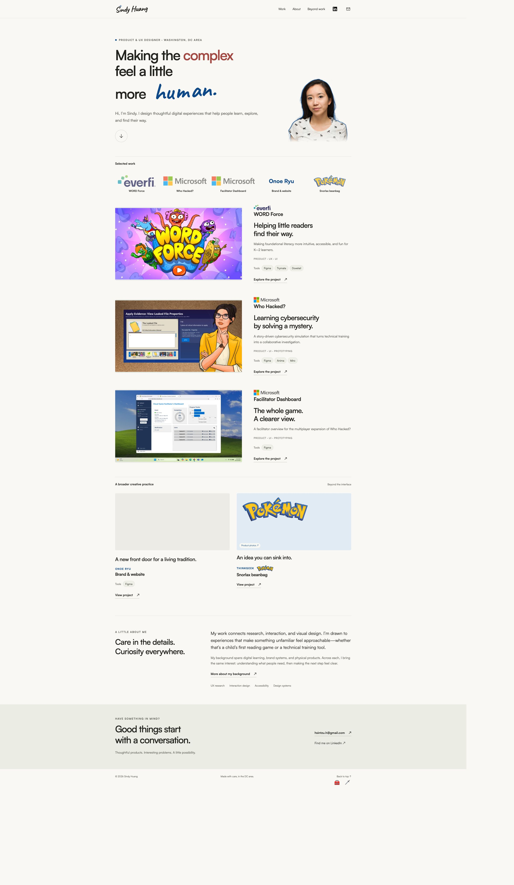

Shape the experience
Refined the portfolio’s hero, visual presentation, and interaction details to give visitors a clear entry point into the selected work.
Process case study · October 2026
Turning a body of design work into an interactive portfolio through collaborative, AI-assisted prototyping, iteration, and publishing.

The challenge
The project brought visual storytelling, case-study navigation, supporting tools, and practical hosting into one working website. Codex supported implementation and troubleshooting, while the collaboration shaped priorities, feedback, and presentation.
Refined the portfolio’s hero, visual presentation, and interaction details to give visitors a clear entry point into the selected work.
Created a searchable Treasure Trove project index and a supporting Bounty Board. This process page sits in the unlisted index, preserving the homepage’s focus.
Published the updated portfolio to GitHub Pages, archived the previous Dilligaffe homepage, and deployed the new static files to the existing hosting account.
Packaged the website and assets in an organized ZIP, shared it with Sindy, and included a Windows launcher for local preview. The launcher still requires verification on Windows.
The workflow used conversational feedback to move between design decisions, implementation, preview, and deployment. The valuable skill was directing the work: clarifying intent, reviewing results, catching assumptions, and deciding what belonged in the final experience.
Collaboratively developed and published an interactive portfolio prototype using AI-assisted design and development, combining storytelling, iteration, version control, and deployment troubleshooting.
Suggested case-study wording. Individual résumé claims should reflect the specific work the person directed or contributed.
OpenAI Codex supported implementation, browser inspection, file packaging, and deployment work. Session records for both the primary project chat and the hosting chat identify GPT-6 Astra (gpt-6-astra) as the backend model.
OpenAI’s logo is used for tool attribution; this project is not sponsored or endorsed by OpenAI. Brand reference.
This identifies the model recorded in those two chats, not every model involved in the project. The separate voice frontend and image-generation model versions were not verified, so they are not attributed here.
Elapsed collaboration at an earlier session checkpoint, including discussion, design, implementation, and troubleshooting. Later handoff work extended beyond this checkpoint.
Uncached input plus output tokens across two recorded chats at a usage checkpoint. Approximately 132.92M additional tokens were recorded as cached input.
Approximate session-log figures, not a complete project total or billing estimate. Cached context is repeated input, not an equivalent volume of newly created work. Voice usage and other chats are not fully accounted for.
Establish the deployment target and source version early. Use focused inspections, record decisions once, and verify each milestone before moving on. Repeated browser captures and context replay increased the recorded usage; measuring them exposed opportunities to simplify the workflow.
The portfolio is published on GitHub Pages and the updated files are served by Dilligaffe over HTTP. The existing ChatGPT Sites preview remains a separate, access-restricted version.
Dilligaffe’s HTTPS certificate still needs verification after enabling the host’s free certificate option. The Windows launcher has not been tested on Windows. Supporting tools use browser-local storage and do not yet sync between devices.